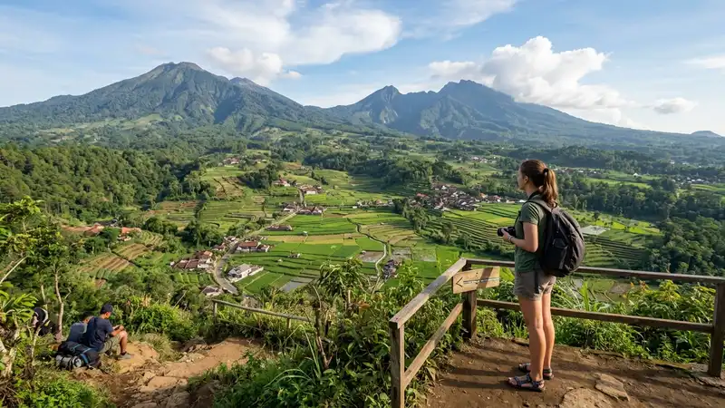

Liburan hemat Batu adalah cara berwisata ke Kota Batu dengan mengatur transportasi, penginapan, dan destinasi bertarif rendah agar pengeluaran tetap terkendali tanpa mengurangi pengalaman liburan.
- Liburan hemat Batu bisa dilakukan dengan memilih homestay dan transportasi umum atau sewa motor
- Sebagian besar destinasi alam di Batu bertarif masuk rendah, bahkan ada yang gratis
- Berkunjung pada hari kerja (weekday) umumnya lebih murah dibanding akhir pekan
- Kuliner di sekitar pasar dan warung lokal jauh lebih hemat dibanding resto kawasan wisata
- Itinerary yang direncanakan matang membantu menekan pengeluaran tak terduga
Apa Itu Liburan Hemat di Kota Batu?
Liburan hemat di Kota Batu berarti menyusun perjalanan wisata dengan memprioritaskan efisiensi biaya pada tiga komponen utama, yaitu transportasi, penginapan, dan konsumsi.
Kota Batu terletak di dataran tinggi Jawa Timur dengan udara sejuk sehingga cocok dikunjungi tanpa perlu fasilitas mewah untuk tetap nyaman. Wisatawan dapat memanfaatkan penginapan sederhana, transportasi umum atau sewa motor, serta menikmati banyak spot alam yang tidak memungut tarif tinggi. Konsep hemat di sini bukan berarti mengorbankan pengalaman, melainkan memilih prioritas: mengalokasikan dana lebih besar untuk aktivitas yang benar-benar diinginkan, dan menekan biaya pada aspek yang kurang penting bagi pengalaman itu sendiri.
Berapa Kisaran Anggaran untuk Liburan Hemat ke Batu?
Anggaran liburan hemat ke Batu umumnya bervariasi tergantung durasi menginap, jumlah destinasi yang dikunjungi, dan pilihan moda transportasi yang digunakan.
Secara umum, komponen biaya terbesar biasanya berasal dari transportasi menuju Batu, terutama bagi wisatawan dari luar Jawa Timur. Setelah tiba, biaya harian dapat ditekan dengan memilih penginapan kelas homestay atau guesthouse, berbagi kamar dengan rombongan, serta makan di warung lokal. Tiket masuk destinasi wisata di Batu juga bervariasi, sehingga memilih kombinasi antara destinasi berbayar dan destinasi gratis dapat membantu menyeimbangkan pengeluaran. Dengan perencanaan yang cermat, biaya harian dapat ditekan secara signifikan dibanding berwisata tanpa perencanaan.
Kapan Waktu Terbaik untuk Liburan Hemat ke Batu?
Waktu terbaik untuk liburan hemat ke Batu adalah pada hari kerja di luar musim liburan sekolah dan libur nasional, karena harga penginapan cenderung lebih rendah dan destinasi wisata tidak terlalu padat.
Pada periode puncak seperti libur Lebaran, libur akhir tahun, dan libur sekolah, harga penginapan di Batu umumnya naik dan sejumlah destinasi menerapkan kebijakan harga musiman. Berkunjung di hari Senin hingga Kamis pada masa low season memberi peluang mendapatkan tarif penginapan lebih rendah, antrean lebih pendek di lokasi wisata populer, dan suasana yang lebih tenang untuk menikmati alam Batu.
Bagaimana Cara Menyusun Itinerary Liburan Hemat di Batu?
Itinerary liburan hemat di Batu sebaiknya disusun dengan mengelompokkan destinasi berdasarkan lokasi agar biaya transportasi antarlokasi lebih efisien.
Wisatawan dapat memulai dengan memilih satu kawasan utama sebagai basis menginap, misalnya sekitar pusat Kota Batu, lalu menyusun kunjungan ke destinasi terdekat lebih dulu sebelum menuju lokasi yang lebih jauh. Menggabungkan destinasi alam gratis, seperti area perkebunan atau taman kota, dengan satu atau dua destinasi berbayar favorit membantu menjaga keseimbangan antara pengalaman dan anggaran. Membawa bekal minuman dan camilan ringan dari luar kawasan wisata juga membantu menekan pengeluaran konsumsi selama perjalanan.
Apa Saja Tips Transportasi Hemat Menuju dan di Batu?
Transportasi hemat menuju dan di dalam Kota Batu dapat dilakukan dengan memanfaatkan kendaraan umum dari Malang atau menyewa motor selama berada di Batu.
Bagi wisatawan yang datang dari luar kota, rute umum yang digunakan adalah transit melalui Kota Malang, kemudian melanjutkan perjalanan ke Batu dengan angkutan umum, ojek daring, atau kendaraan sewaan. Menyewa motor selama di Batu umumnya lebih ekonomis dibanding menyewa mobil, terutama bagi rombongan kecil, karena biaya bahan bakar dan parkir yang lebih rendah. Berbagi kendaraan sewa dengan rombongan juga membantu membagi biaya transportasi secara merata.
Apa Saja Tips Hemat Memilih Penginapan di Batu?
Tips hemat memilih penginapan di Batu meliputi memilih homestay atau guesthouse lokal, memesan jauh hari, dan menghindari periode akhir pekan atau musim liburan.
Kawasan Batu memiliki banyak pilihan penginapan mulai dari homestay milik warga, guesthouse sederhana, hingga hotel bertarif menengah. Memilih penginapan yang berlokasi sedikit di luar pusat keramaian umumnya memberikan tarif lebih rendah tanpa mengurangi akses ke destinasi wisata utama. Memesan penginapan lebih awal, terutama menjelang musim liburan, juga membantu mendapatkan tarif promosi sebelum harga naik mendekati tanggal keberangkatan.
Bagaimana Cara Hemat untuk Urusan Makan Selama Liburan di Batu?
Cara hemat untuk urusan makan selama liburan di Batu adalah dengan memilih warung lokal, pasar tradisional, dan pusat jajanan dibanding restoran di area wisata utama.
Kawasan sekitar pasar dan permukiman warga di Batu umumnya menawarkan menu harian dengan harga yang jauh lebih terjangkau dibanding resto yang berada tepat di kawasan destinasi wisata. Mencoba kuliner khas dataran tinggi seperti sayur dan buah segar hasil pertanian lokal juga menjadi cara menikmati kekhasan Batu tanpa mengeluarkan biaya besar. Membeli oleh-oleh langsung dari sentra produksi, bukan dari toko suvenir di kawasan wisata, turut membantu menekan pengeluaran.
Apa Saja Kesalahan Umum yang Membuat Liburan ke Batu Jadi Boros?
Kesalahan umum yang membuat liburan ke Batu jadi boros antara lain tidak menyusun itinerary sejak awal, memesan penginapan mendadak, dan terlalu banyak mengunjungi destinasi berbayar dalam satu hari.
Wisatawan yang berangkat tanpa rencana matang cenderung menghabiskan lebih banyak waktu dan biaya transportasi karena rute yang tidak efisien. Memesan penginapan secara mendadak, terutama saat akhir pekan atau musim liburan, juga berisiko membuat wisatawan membayar tarif yang lebih tinggi dari harga normal. Selain itu, memaksakan diri mengunjungi terlalu banyak destinasi berbayar dalam waktu singkat dapat membuat anggaran cepat habis dan justru mengurangi kenyamanan liburan itu sendiri.
FAQ
Apakah liburan hemat ke Batu cocok untuk keluarga?
Liburan hemat ke Batu cocok untuk keluarga karena banyak destinasi alam yang ramah anak dan penginapan keluarga dengan tarif terjangkau tersedia di berbagai kawasan Batu.
Apakah bisa liburan hemat ke Batu tanpa kendaraan pribadi?
Liburan hemat ke Batu tetap bisa dilakukan tanpa kendaraan pribadi dengan memanfaatkan transportasi umum dari Malang dan menyewa motor selama berada di Batu.
Berapa lama waktu ideal untuk liburan hemat di Batu?
Waktu ideal untuk liburan hemat di Batu umumnya berkisar dua hingga tiga hari, cukup untuk mengunjungi beberapa destinasi utama tanpa terburu-buru.
Arya
Siswa Skariga yang sedang belajar di Gm Academy.